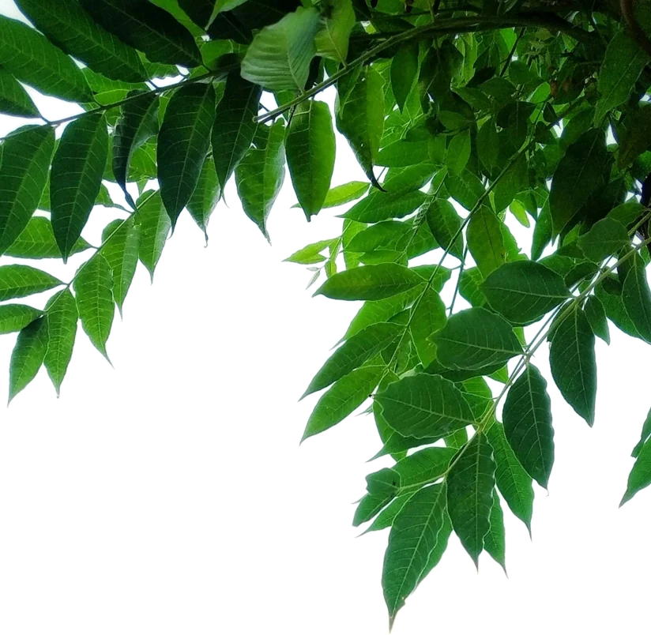
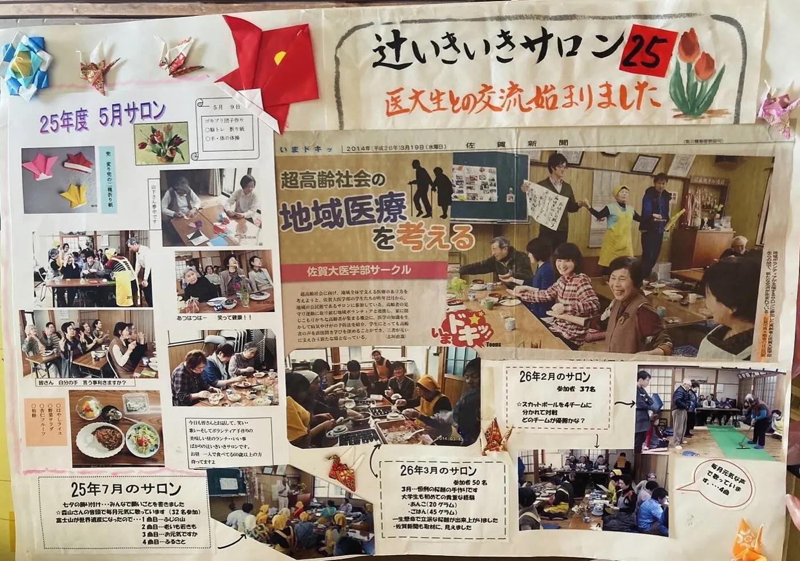
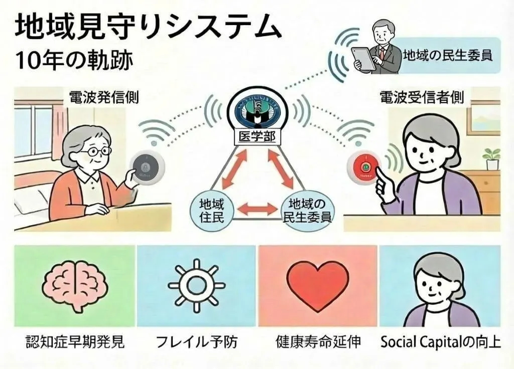
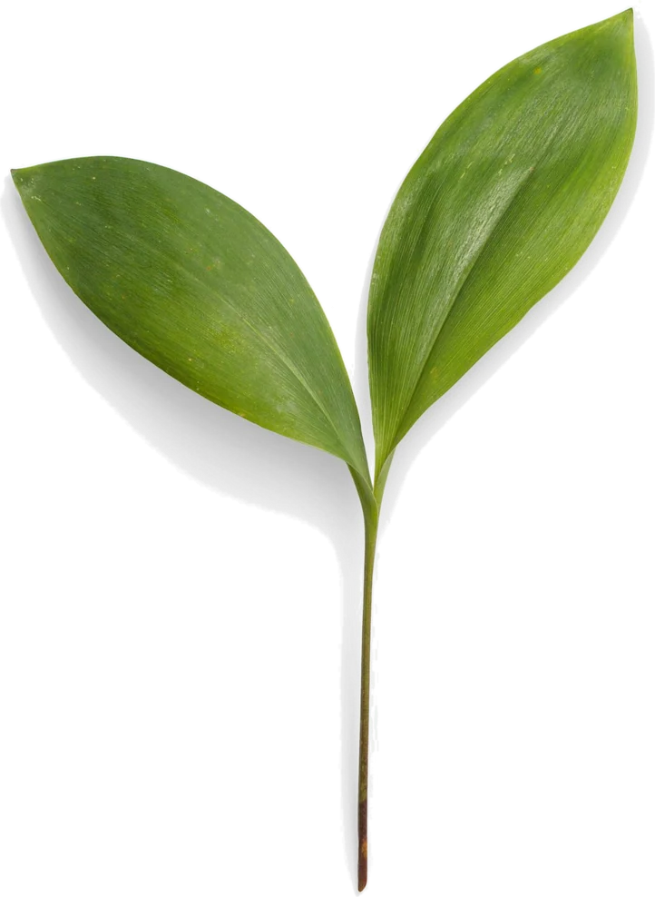

MEDIA
2026年3月 ／ 押しボタンプロジェクトを大学として発表
2026年2月 ／ 住民向け説明会の様子が取材されました
2025年3月 ／ 地域での活動が紹介されました
2026年5月〜 ／ パーソナリティとして出演
2024年9月 ／ プロジェクトが掲載
特集「知らないまま後悔しないで 子宮頸がんとHPVワクチン」でVcanの出張授業と講師として紹介
SCSのサロン活動が地域の新聞で紹介
VIDEO


